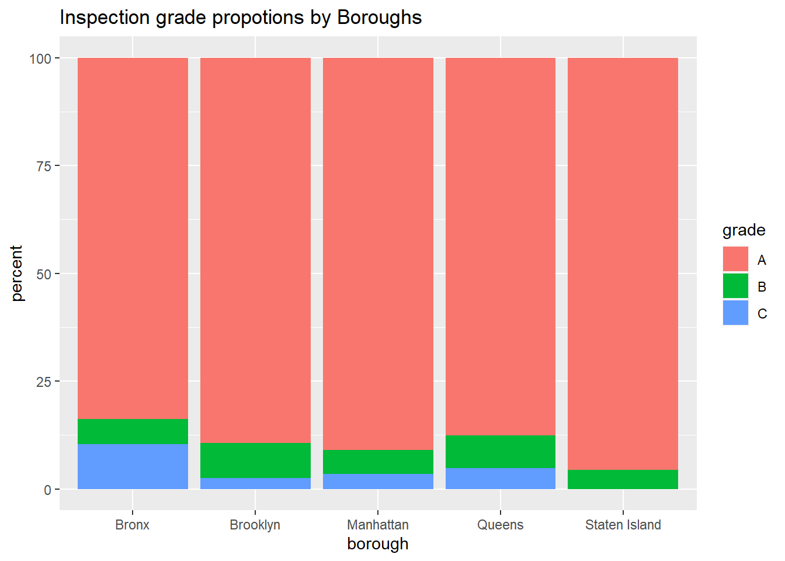

map
Top 10 violations
There are a total of 169 distinct types of violations documented for NYC restaurants, and one restaurant may have fallen into more than one category. The following graph lists the 10 most common violations of NYC restaurants, followed by a table that exhibits the abbreviated violation descriptions and the corresponding frequencies. A complete description for all violations could be found here.
top_10_vio = inspection_raw %>%
mutate(
violation_description = as.factor(violation_description)
) %>%
group_by(violation_description) %>%
summarize(
n = n()
) %>%
mutate(
rank = rank(-n, ties.method = "first")
) %>%
filter(rank <=10) %>%
arrange(desc(n)) %>% mutate(
rank = as.factor(rank)
) %>%
mutate(
abb_violation = fct_recode(
rank,
"Non-food contact surface improperly constructed" = "1",
"Food contact surface not properly cleaned" = "2",
"Unacceptable materials" = "3",
"Facility not vermin proof" = "4",
"Not free of harborage" = "5",
"Evidence of mice or live mice present" = "6",
"Filth flies or food/refuse/sewage with FRSA flies" = "7",
"Cold CT food held above 41 F" = "8",
"Cold food item held above 41 F" = "9",
"Evidence of mice or live mice in establishment’s food or non-food areas" = "10"
)
)
top_10_vio %>%
ggplot(aes(x = rank, y = n, fill = n), data = .)+geom_bar(stat="identity")+labs(x = "violation type", y = "frequency", caption = "Exact violation type and associated frquency is shown in the following table")top_10_vio %>%
select(abb_violation, n) %>%
knitr::kable()| abb_violation | n |
|---|---|
| Non-food contact surface improperly constructed | 2854 |
| Food contact surface not properly cleaned | 2498 |
| Unacceptable materials | 1504 |
| Facility not vermin proof | 1445 |
| Not free of harborage | 1395 |
| Evidence of mice or live mice present | 1270 |
| Filth flies or food/refuse/sewage with FRSA flies | 1126 |
| Cold CT food held above 41 F | 1064 |
| Cold food item held above 41 F | 969 |
| Evidence of mice or live mice in establishment’s food or non-food areas | 576 |
top 10 violations vs. cuisine type
vio_cuisine_bar<-
inspection_raw %>%
filter(violation_description %in% top_10_vio$violation_description) %>%
group_by(violation_description,cuisine_description) %>%
summarize(n_obs=n()) %>%
filter(min_rank(desc(n_obs))<=5) %>%
left_join(top_10_vio) %>%
select(abb_violation,cuisine_description,n_obs,rank) %>%
ggplot(aes(x=cuisine_description
,y=n_obs,fill=cuisine_description))+
geom_bar(position="dodge", stat="identity")+
theme(axis.text.x = element_text(angle = 90, vjust = 0.5, hjust = 1))+
theme(axis.text.x = element_text(size = 4))+
labs(
x="top 5 cuisine types at top 10 most frequently appeared violation",
y="Number"
)+
facet_grid(~rank)## `summarise()` has grouped output by 'violation_description'. You can override
## using the `.groups` argument.
## Joining, by = "violation_description"
## Adding missing grouping variables: `violation_description`ggplotly(vio_cuisine_bar)Inspection Letter Grade
The letter grading program for NYC restaurant was initiated on July 27, 2010, which involved a two-step inspection process: restaurants who do not receive an “A” on their initial inspection will be re-inspected within no less than 7 days.
There are a total of 5 categories of letter grade:
A score of less than 14 points on either initial or re-inspection results in an “A” grade
On re-inspection, a score of 14-27 points means a restaurant receives both a “B” grade and a “Grade Pending (Z)” card
On re-inspection, a score of 28 or more points means a restaurant receives both a “C” grade and a “Grade Pending (Z)” card
Certain uncorrected violations may generate additional compliance inspections, which are ungraded receive letter “N”.
Additional information could be accessed here.
For the purpose of our analysis, we consider restaurants with grade “A”, “B” or “C”.
inspection_raw %>%
filter(!is.na(boro),
grade == "A"|grade == "B"|grade =="C") %>%
group_by(boro, grade) %>%
summarize(
total = n()
) %>% mutate(
prop = (total/sum(total))*100
) %>%
ggplot(aes(x = boro, y = prop, fill = grade), data =.) + geom_bar(stat = "identity", position="stack") + labs(title = "Inspection grade propotions by Boroughs", y = "percent", x = "borough")## `summarise()` has grouped output by 'boro'. You can override using the
## `.groups` argument.
The above graph shows the proportions of each letter grade for different boroughs of NYC. The majority of the restaurants in NYC received an “A” as the inspection grade, either during the initial inspection or re-inspection. Among all boroughs in NYC, Bronx was the one with the highest proportion of restaurants receiving a grade “C”. Staten Island had the highest proportion of restaurants with grade “A” and no restaurant with grade “C”, followed by Manhattan which had the second highest proportion of grade “A” restaurants.
grade associated with the inspection vs. boro / cuisine type
grade_boro<-
inspection_raw %>%
filter(grade %in% c("A","B","C")) %>%
mutate(boro=fct_infreq(boro)) %>%
ggplot(aes(x = boro, fill = grade))+
geom_bar()+
labs(
x="Borough",
y="Number"
)
top_10_cuisine<-
inspection_raw %>%
filter(grade %in% c("A","B","C")) %>%
group_by(cuisine_description) %>%
summarise(n_obs=n()) %>%
filter(min_rank(desc(n_obs))<=10)
grade_cuisine<-
inspection_raw %>%
filter(grade %in% c("A","B","C") & cuisine_description %in% top_10_cuisine$cuisine_description) %>%
mutate(cuisine_description=fct_infreq(cuisine_description)) %>%
ggplot(aes(x=cuisine_description,fill=grade))+
geom_bar()+
theme(axis.text.x = element_text(angle = 90, vjust = 0.5, hjust = 1))+
labs(
x="Cuisine",
y="Number"
)
grade_boro/grade_cuisine
Critical Flag
Depending on the seriousness of the violations, Health Code violations are categorized as “critical” or “general (not critical)”.
Critical violations are more likely than the general ones to contribute to food-borne illness, because they may be a substantial risk to the public’s health. For instance, failing to cook food to required temperatures is a critical violation, while failing to provide an accurate thermometer in a refrigerator is a general violation. Hence, a restaurant could have more than one critical violations or flags.
Proportions of Critical Violations
inspection_raw %>%
filter(!is.na(grade),
!is.na(boro),
critical_flag == "Critical"| critical_flag == "Not Critical") %>%
group_by(boro,critical_flag) %>%
summarize(
total = n()
) %>% mutate(
prop = (total/sum(total))*100
) %>%
ggplot(aes(x = boro, y = prop, fill = critical_flag), data =.) + geom_bar(stat = "identity", position="stack") + labs(title = "Percent with critical flag by boroughs")## `summarise()` has grouped output by 'boro'. You can override using the
## `.groups` argument.
As shown above, more than 50 percent of the violations are not critical. In addition, the ratio of critical to non-critical violations is approximately the same across different boroughs of NYC.
Critical Flag Density Map
The following interactive map uses the inspection data and illustrates the distribution of restaurant with critical violations in NYC. This map is generated by Plotly Chart Library and Mapbox geolocation function.
## <request>
## Options:
## * : list(x = list(visdat = list(d639623967c9 = function ()
## plotlyVisDat), cur_data = "d639623967c9", attrs = list(d639623967c9 = list(lon = ~longitude, lat = ~latitude, radius = 3, alpha_stroke = 1, sizes = c(10, 100), spans = c(1, 20), type = "densitymapbox")), layout = list(width = NULL, height = NULL, margin = list(b = 40, l = 60, t = 25, r = 10)), source = "A", config = list(modeBarButtonsToAdd = c("hoverclosest", "hovercompare"), showSendToCloud = FALSE), layoutAttrs = list(d639623967c9 = list(mapbox = list(style = "streets", zoom = 10.5, center = list(
## lat = 40.71, lon = -73.98)), title = "Density Heatmap of Restaurants with Critical Flag"))), width = NULL, height = NULL, sizingPolicy = list(defaultWidth = "100%", defaultHeight = 400, padding = 0, viewer = list(defaultWidth = NULL, defaultHeight = NULL, padding = NULL, fill = TRUE, suppress = FALSE, paneHeight = NULL), browser = list(defaultWidth = NULL, defaultHeight = NULL, padding = NULL, fill = TRUE, external = FALSE), knitr = list(defaultWidth = NULL, defaultHeight = NULL, figure = TRUE)),
## dependencies = list(list(name = "typedarray", version = "0.1", src = list(file = "htmlwidgets/lib/typedarray"), meta = NULL, script = "typedarray.min.js", stylesheet = NULL, head = NULL, attachment = NULL, package = "plotly", all_files = FALSE), list(name = "jquery", version = "3.5.1", src = list(file = "lib/jquery"), meta = NULL, script = "jquery.min.js", stylesheet = NULL, head = NULL, attachment = NULL, package = "crosstalk", all_files = TRUE), list(name = "crosstalk", version = "1.2.0", src = list(
## file = "www"), meta = NULL, script = "js/crosstalk.min.js", stylesheet = "css/crosstalk.min.css", head = NULL, attachment = NULL, package = "crosstalk", all_files = TRUE), list(name = "plotly-htmlwidgets-css", version = "2.11.1", src = list(file = "htmlwidgets/lib/plotlyjs"), meta = NULL, script = NULL, stylesheet = "plotly-htmlwidgets.css", head = NULL, attachment = NULL, package = "plotly", all_files = FALSE), list(name = "plotly-main", version = "2.11.1", src = list(file = "htmlwidgets/lib/plotlyjs"),
## meta = NULL, script = "plotly-latest.min.js", stylesheet = NULL, head = NULL, attachment = NULL, package = "plotly", all_files = FALSE)), elementId = NULL, preRenderHook = function (p, registerFrames = TRUE)
## {
## UseMethod("plotly_build")
## }, jsHooks = list())
## * mapboxAccessToken: pk.eyJ1IjoidGhlb25seXZpcGVyNjYiLCJhIjoiY2xiZWY3dmp6MGFyeTNwcXppdzRnYm1nbyJ9.G05d_geqdk2HTTdZRmOmzgAccording to the density heat map, restaurants with critical violations are more frequently found in some of the busier area of each borough: for instance, Soho and West Village in lower Manhattan, Korean Town in middle Manhattan, Williamsburg in Brooklyn, Jackson Heights and Main Street in Queens, etc.